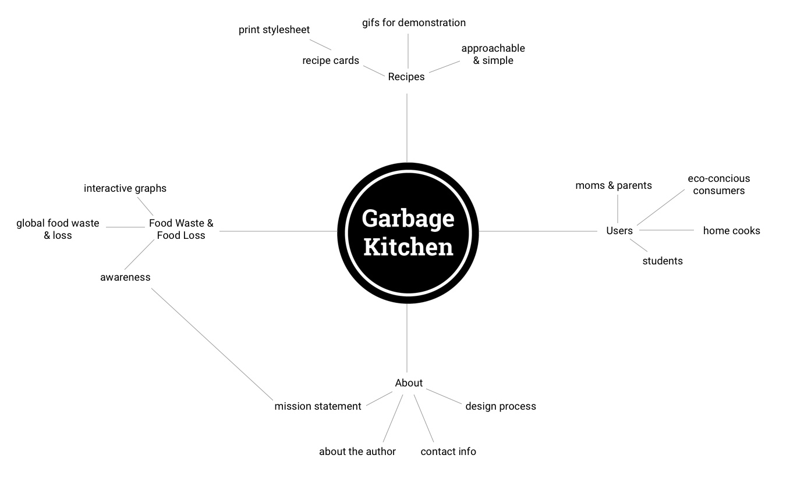
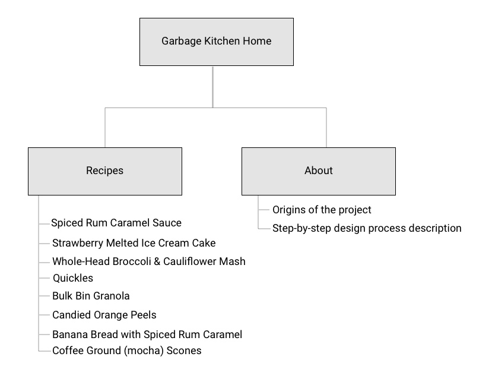
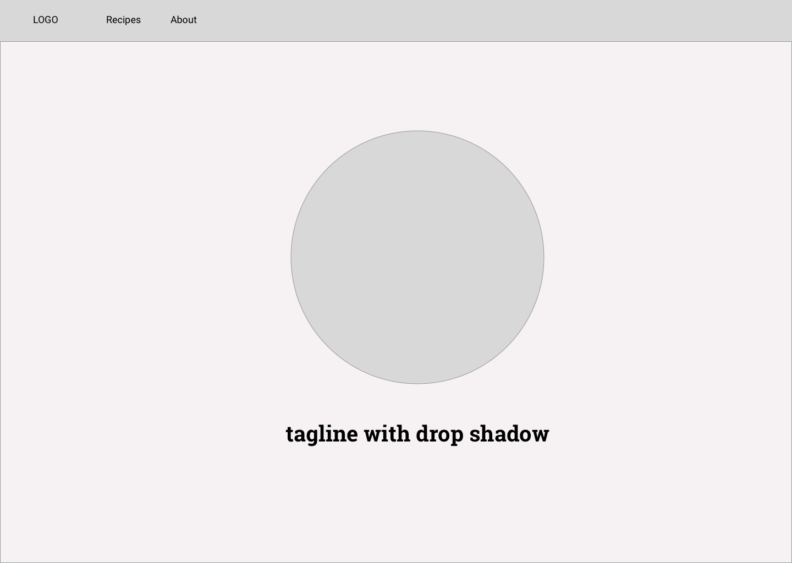
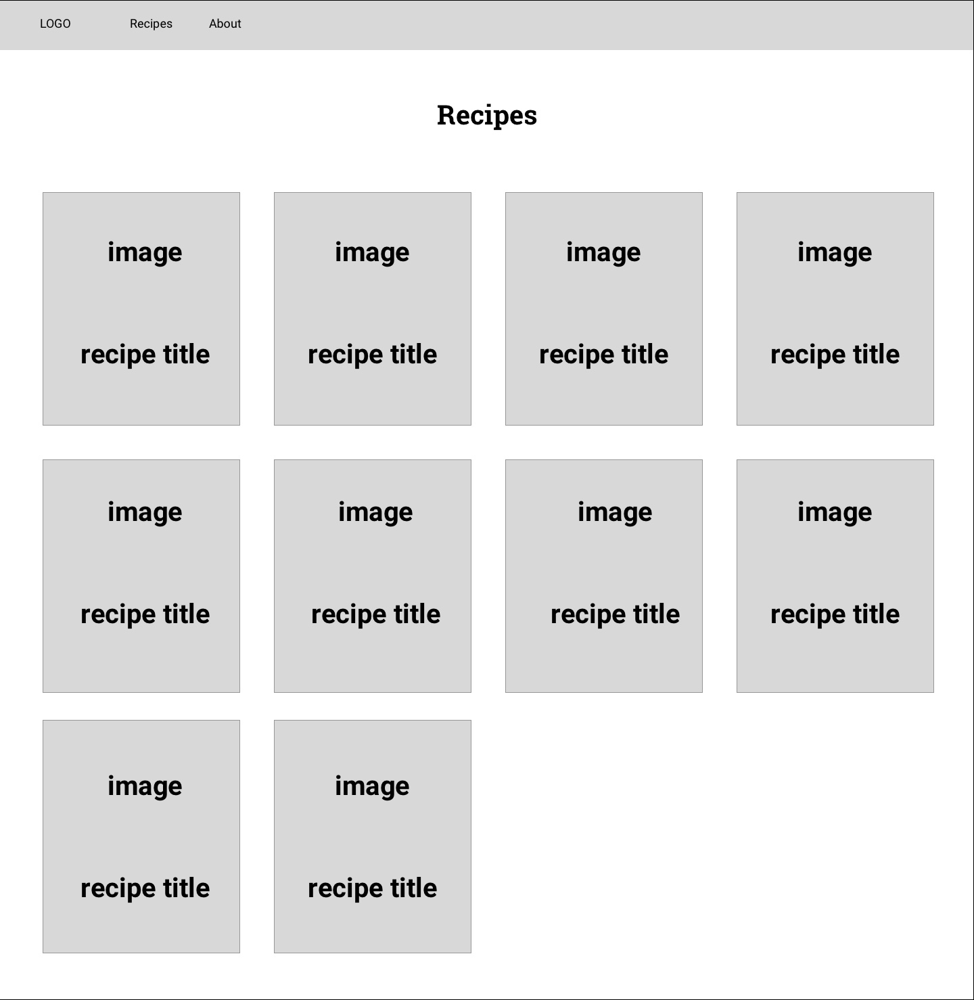
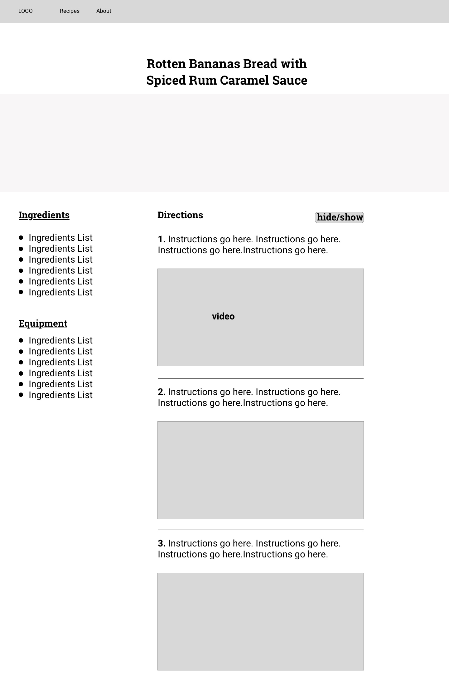
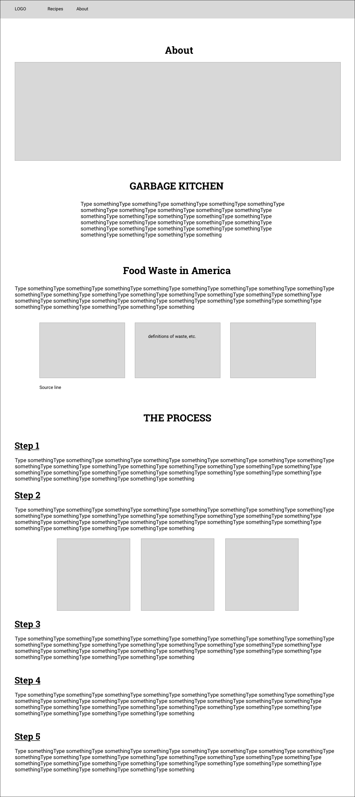

About
Garbage Kitchen was created and developed at the University of Miami as a part of the School of Communication's Interactive Media M.F.A. program by Rori Kotch. Over the course of a semester, all recipes were developed, cooked, documented & more.
For all inquiries please email: rorikotch at gmail dot com
The Process
Step 1
The first part of the process was creating a concept map of the entire site to see how things could be related. While creating my concept map I was able to explore new ideas and concepts that I may not have thought of if I just went straight into the human-centered design process. Once I completed my concept map I created a sitemap to map out all of the content of the website and plan out the information architecture of the site.
 Step 2
The second step of the process was to complete a competitive analysis of other websites and companies that have a similar idea or mission. I completed my competitive analysis using a google sheet. To view the full competitive analysis click here.


Step 3
After completing the competitive analysis I was able to move onto task flows. Task flows helped me determine the flow of the website as a whole and what tools I needed to develop in the future.
Step 4 & 5
Once my task flows were complete I was able to start sketching. Sketching helped me ideate even further, which is always good. The low-fidelity wireframes show the bare bones of the site and its structure, they are pictured below.
   Step 6
After low-fidelity wireframes were complete I started coding the site! The first step of the coding process was to purchase a domain name (I used NameCheap.) I linked my Github to my domain using Github pages and then I was able to code away!
Step 7
Once I started coding the site and developing the idea further, I continued with my recipe testing. Each recipe was tested twice and was recorded and video teaped each time. When the recipes were completed I had friends and family try them, only recipes with a positive response made it on the site.
Step 8
After all recipes were tested and developed, I was able to start editing all the videos and photos taken during the process. Photos were all edited using Adobe Lightroom and Photoshop. All videos were edited using iMovie.
Step 9
Upon the completion of researching, developing recipes, documenting the reciepes & coding the site I was able to complete usability testing. All usability testing was completed in person. For this process I had to make participant packets and moderator packets and schedule out times that were convenient for all participants. A total of five user tests were completed for the website and two in-person recipe tests were held with participants. In-person recipe tests included watching participants recreate recipes from the website and hearing about the process from the participant's point-of-view. The recipes that were tested by the users included the Broccoli & Cauliflower Mash & Ginger Tea. Both participants were pleased with the instructions provided and the layout of the recipes page. One participant used their mobile phone to read the recipe and the other used a laptop.
Step 10
Teaser video & presentation To view the full presentation click here.